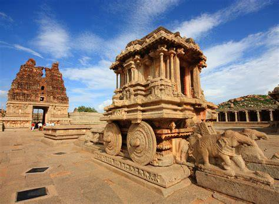

| SNO | Site Name | Site Image | Site Description | Site more info |
|---|---|---|---|---|
| 1 | Hampi |  | Hampi was the capital of the Vijayanagara Empire from 1336 to 1565 (as Vijayanagara), when it was abandoned.[3] It was a fortified city. Chronicles left by Persian and European travellers, particularly the Portuguese, say that Hampi was a prosperous, wealthy and grand city near the Tungabhadra River, with numerous temples, farms and trading markets. | View here |